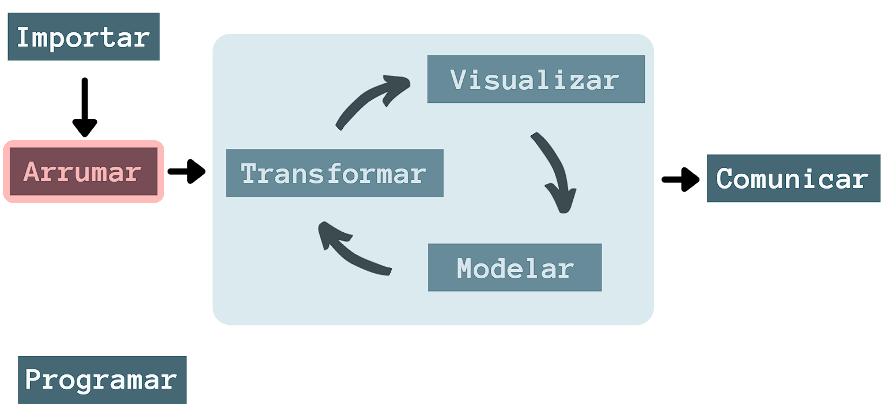
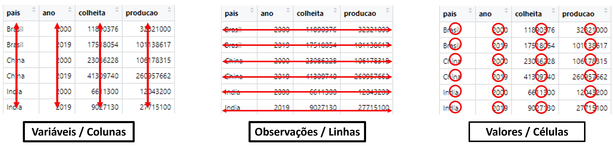
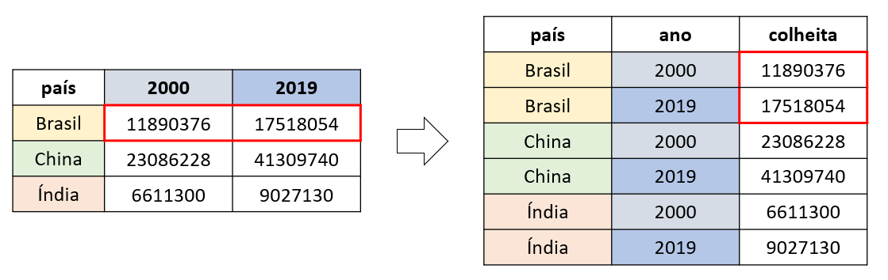
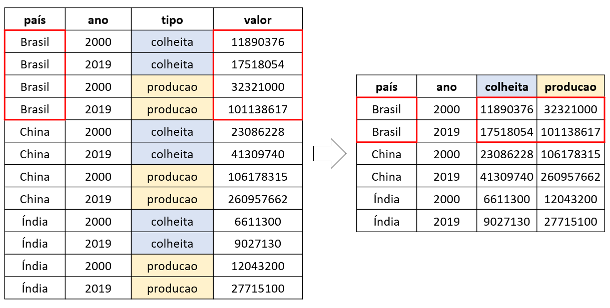

5 Organização
5.1 Introdução
Neste capítulo, trataremos sobre a organização dos dados, seguindo o conceito conhecido como tidy data (dados arrumados), cujo objetivo é ajustar os dados em uma estrutura consistente e padronizada.
Normalmente, costuma ser trabalhoso o processo de organizar os dados, mas, com o auxílio das ferramentas do tidyverse, conseguimos obter bons resultados que, em longo prazo, nos permite ter mais tempo e facilidade para executar as etapas seguintes.
Como o próprio nome do pacote sugere, o tidyverse é baseado nos princípios de uma tidy data. Por isso, seus pacotes foram desenvolvidos para funcionarem seguindo tal princípio e serem complementares entre si.
No Capítulo 4, demos início ao processo de organização, seguido da importação dos dados ao R no formato de tibble. Neste capítulo, abordaremos com mais detalhes sobre o pacote tibble, além de apresentar outras ferramentas de organização dos dados, presentes no pacote tidyr.
Tanto o pacote tibble, como o tidyr fazem parte do tidyverse. Sendo assim, vamos carregá-los.
Os exemplos a seguir utilizam um mesmo conjunto de dados em diferentes formatações. Para fazer o download dos dados, clique aqui.
5.2 Tibble
No Capítulo 4 vimos que os pacotes readr e readxl apresentam funções que importam os dados ao R no formato de tibble e não em um data frame tradicional.
Isso se deve ao fato que ambos os pacotes seguem o padrão tidyverse, bem como a tibble, oriunda do pacote de mesmo nome (tibble). Dessa forma, os pacotes que seguem a lógica do tidyverse utilizam a tibble como o data frame padrão e não a sua versão tradicional1.
De maneira geral, a tibble apresenta as mesmas propriedades de seu análogo original, apresentando algumas melhorias e ajustes que facilitam o nosso trabalho. Dessa forma, os conceitos que vimos na Seção 3.10 e Seção 3.12 são válidos para a tibble.
Apesar da tibble também ser um data frame, neste material, utilizaremos o termo data frame apenas para nos referirmos à versão tradicional.
5.2.1 Converter em Tibble
Para converter data frames em tibble, utilizamos a função as_tibble(). Como exemplo, transformaremos o conjunto de dados nativo do R iris para o formato tibble.
class(iris)
#> [1] "data.frame"iris_tibble <- as_tibble(iris)
iris_tibble
#> # A tibble: 150 × 5
#> Sepal.Length Sepal.Width Petal.Length Petal.Width Species
#> <dbl> <dbl> <dbl> <dbl> <fct>
#> 1 5.1 3.5 1.4 0.2 setosa
#> 2 4.9 3 1.4 0.2 setosa
#> 3 4.7 3.2 1.3 0.2 setosa
#> 4 4.6 3.1 1.5 0.2 setosa
#> 5 5 3.6 1.4 0.2 setosa
#> 6 5.4 3.9 1.7 0.4 setosa
#> 7 4.6 3.4 1.4 0.3 setosa
#> 8 5 3.4 1.5 0.2 setosa
#> 9 4.4 2.9 1.4 0.2 setosa
#> 10 4.9 3.1 1.5 0.1 setosa
#> # ℹ 140 more rows
class(iris_tibble)
#> [1] "tbl_df" "tbl" "data.frame"Por padrão, a tibble mostra as dimensões da tabela (linhas x colunas) e a classe das variáveis entre <>, logo abaixo de seu nome.
Além disso, apenas as dez primeiras linhas são apresentadas e, caso o número de colunas não couber na largura da tela, essas são ocultadas da apresentação. Isso evita que a saída no console fique sobrecarregada de informações desordenadas, principalmente quando trabalhamos com um conjunto de dados extenso.
Caso seja preciso ter uma visão geral dos dados, podemos utilizar a função glimpse().
glimpse(iris_tibble)
#> Rows: 150
#> Columns: 5
#> $ Sepal.Length <dbl> 5.1, 4.9, 4.7, 4.6, 5.0, 5.4, 4.6, 5.0, 4.4, 4.9, 5.4, 4.…
#> $ Sepal.Width <dbl> 3.5, 3.0, 3.2, 3.1, 3.6, 3.9, 3.4, 3.4, 2.9, 3.1, 3.7, 3.…
#> $ Petal.Length <dbl> 1.4, 1.4, 1.3, 1.5, 1.4, 1.7, 1.4, 1.5, 1.4, 1.5, 1.5, 1.…
#> $ Petal.Width <dbl> 0.2, 0.2, 0.2, 0.2, 0.2, 0.4, 0.3, 0.2, 0.2, 0.1, 0.2, 0.…
#> $ Species <fct> setosa, setosa, setosa, setosa, setosa, setosa, setosa, s…Ou ainda, a função View() (vide Seção 3.10).
5.2.2 Criando Tibble
Também podemos criar uma tibble dentro do R com a função tibble().
tibble(
nomes = c("José", "João", "Maria", "Ana"),
sexo = c("M", "M", "F", "F"),
idade = 21:24,
idade_ao_quadrado = idade ^ 2,
filhos = 0
)
#> # A tibble: 4 × 5
#> nomes sexo idade idade_ao_quadrado filhos
#> <chr> <chr> <int> <dbl> <dbl>
#> 1 José M 21 441 0
#> 2 João M 22 484 0
#> 3 Maria F 23 529 0
#> 4 Ana F 24 576 0A construção de uma tibble segue a mesma lógica apresentada na Seção 3.10 quando criamos um data frame com a função data.frame(). Primeiro, designamos os nomes das variáveis e, posteriormente, o vetor com seus valores.
No exemplo acima, veja que foi possível criar a coluna idade_ao_quadrado em função de outra coluna, a idade. Na coluna filhos, passamos um vetor de tamanho 1, ocorrendo o processo de reciclagem (vide Seção 3.6), ou seja, foi atribuído o valor 0 para todas as demais observações até que se igualasse o número de linhas da tibble.
É possível colocar nomes de colunas com caracteres de sintaxe inválida (vide Seção 3.3), desde que os nomes estejam entre acentos graves (``).
No caso dos data frames, teríamos dificuldades em trabalhar com esse tipo de sintaxe, pois os nomes seriam convertidos para um formato que se enquadre à sintaxe válida, portanto, ocorreria uma alteração dos nomes designados originalmente.
A seguir, criaremos um exemplo de tibble (puramente a título de ilustração) com nomes que contêm espaços, começam com números e possuem caracteres especiais.
tibble(
`nomes dos estudantes` = c("João", "José", "Sara"),
`2sexo` = c("M", "M", "F"),
`:)idade` = 21:23,
`idade²` = `:)idade` ^ 2,
`nº filhos` = 0
)
#> # A tibble: 3 × 5
#> `nomes dos estudantes` `2sexo` `:)idade` `idade²` `nº filhos`
#> <chr> <chr> <int> <dbl> <dbl>
#> 1 João M 21 441 0
#> 2 José M 22 484 0
#> 3 Sara F 23 529 0Por consequência, quando trabalharmos com as variáveis nomeadas dessa forma, precisaremos colocá-las sempre entre acentos graves, como foi o caso da construção da coluna idade², em que tivemos que colocar a coluna :)idade entre acentos graves para que conseguíssemos elevar seus valores ao quadrado.
Ainda que a tibble permita trabalhar com esse tipo de sintaxe, recomenda-se evitá-las, a fim de evitar o uso dos acentos graves a todo momento que formos referenciar uma coluna, tornando o trabalho mais fácil.
Por último, podemos criar tibble com a função tribble(). A tribble() é construída de maneira transposta ao formato convencional. Na primeira entrada, colocamos os nomes das variáveis começando com ~, separadas por vírgulas. Em seguida, colocamos os valores de cada observação. Esta opção é uma forma mais visual e intuitiva para construir pequenas tibble.
tribble(
~nome, ~idade, ~sexo,
"João", 21 , "M",
"José", 22 , "M",
"Sara", 23 , "F"
)
#> # A tibble: 3 × 3
#> nome idade sexo
#> <chr> <dbl> <chr>
#> 1 João 21 M
#> 2 José 22 M
#> 3 Sara 23 F5.3 Dados arrumados
Um mesmo conjunto de dados pode ser disposto de diversas maneiras. Os exemplos a seguir mostram três formas de organização. Os dados são referentes a produção (em toneladas) e a área colhida (em hectares) de milho, no Brasil, China e Índia, nos anos de 2000 e 2019.
library(readr)
read_csv(file = "dados/tidy1.csv")
#> # A tibble: 6 × 4
#> pais ano colheita producao
#> <chr> <dbl> <dbl> <dbl>
#> 1 Brasil 2000 11890376 32321000
#> 2 Brasil 2019 17518054 101138617
#> 3 China 2000 23086228 106178315
#> 4 China 2019 41309740 260957662
#> 5 India 2000 6611300 12043200
#> 6 India 2019 9027130 27715100
read_csv(file = "dados/tidy2.csv")
#> # A tibble: 12 × 4
#> pais ano tipo valor
#> <chr> <dbl> <chr> <dbl>
#> 1 Brasil 2000 colheita 11890376
#> 2 Brasil 2019 colheita 17518054
#> 3 Brasil 2000 producao 32321000
#> 4 Brasil 2019 producao 101138617
#> 5 China 2000 colheita 23086228
#> 6 China 2019 colheita 41309740
#> 7 China 2000 producao 106178315
#> 8 China 2019 producao 260957662
#> 9 India 2000 colheita 6611300
#> 10 India 2019 colheita 9027130
#> 11 India 2000 producao 12043200
#> 12 India 2019 producao 27715100
read_csv(file = "dados/tidy3.csv")
#> # A tibble: 6 × 3
#> pais ano produtividade
#> <chr> <dbl> <chr>
#> 1 Brasil 2000 32321000/11890376
#> 2 Brasil 2019 101138617/17518054
#> 3 China 2000 106178315/23086228
#> 4 China 2019 260957662/41309740
#> 5 India 2000 12043200/6611300
#> 6 India 2019 27715100/9027130Todos os exemplos são maneiras distintas de representar um mesmo conjunto de dados. Contudo, apenas uma delas é uma tidy data (ou base de dados arrumada).
Uma tidy data deve seguir três propriedades:
Cada variável possui sua própria coluna;
Cada observação possui sua própria linha;
Cada célula contém somente um único valor.
A Figura 5.2 ilustra, visualmente, as propriedades.

Ao designar uma variável à uma única coluna, podemos trabalhar com as informações a partir de vetores individualizados. Portanto, os conceitos vistos na Seção 3.6, referente aos vetores, são aplicáveis a cada uma das colunas de uma base de dados organizada. E é a partir dessa lógica que os pacotes do tidyverse trabalham.
Dentre os três exemplos ilustrados anteriormente, apenas o primeiro caso ilustra uma tidy data.
read_csv(file = "dados/tidy1.csv")
#> # A tibble: 6 × 4
#> pais ano colheita producao
#> <chr> <dbl> <dbl> <dbl>
#> 1 Brasil 2000 11890376 32321000
#> 2 Brasil 2019 17518054 101138617
#> 3 China 2000 23086228 106178315
#> 4 China 2019 41309740 260957662
#> 5 India 2000 6611300 12043200
#> 6 India 2019 9027130 27715100Dessa forma, sempre que se deparar com um novo conjunto de dados, observe primeiro quais elementos são variáveis e quais são observações, e se uma célula contém um ou mais valores.
Nos próximos capítulos, veremos como utilizar uma tidy data para realizar transformações e gráficos. Mas antes, trataremos sobre os dados desarrumados2.
5.4 Pivotagem
Uma maneira de organizar os dados desarrumados é realizar a pivotagem. Este método converte as observações que estão como nome de colunas para linhas ou variáveis que estão em linhas para nomes de colunas.
Para isso, utilizamos duas funções do pacote tidyr: pivot_longer() e pivot_wider().
5.4.1 Alongando os dados
A função pivot_longer() converte as observações que estão como nome das colunas, para linhas. Com isso, a função torna a base de dados mais longa, ou seja, reduz o número de colunas e aumenta o número de linhas.
Aplicaremos sua função no arquivo tidy-producao.csv.
producao <- read_csv(file = "dados/tidy-producao.csv")
producao
#> # A tibble: 3 × 3
#> pais `2000` `2019`
#> <chr> <dbl> <dbl>
#> 1 Brasil 32321000 101138617
#> 2 China 106178315 260957662
#> 3 India 12043200 27715100Veja que as observações referentes aos anos de 2000 e 2019 estão como nome das colunas, cada uma com os respectivos valores de produção de milho.
Para isso, devemos criar duas novas colunas, uma para alocar os anos e outra para os valores de produção de milho.
producao_alongada <- pivot_longer(
data = producao,
cols = c(`2000`, `2019`),
names_to = "ano",
values_to = "producao"
)
producao_alongada
#> # A tibble: 6 × 3
#> pais ano producao
#> <chr> <chr> <dbl>
#> 1 Brasil 2000 32321000
#> 2 Brasil 2019 101138617
#> 3 China 2000 106178315
#> 4 China 2019 260957662
#> 5 India 2000 12043200
#> 6 India 2019 27715100A função pivot_longer() apresenta os seguintes argumentos:
data =para indicar qual objeto desejamos pivotar;cols =para selecionar as colunas que desejamos pivotar, ou seja, as colunas que não são variáveis (2000e2019);names_to =dizemos para qual coluna os nomes selecionados emcols =devem ir. No caso,2000e2019são redirecionadas para a nova coluna de nome"ano";values_to =dizemos para qual coluna os valores das colunas selecionadas emcols =devem ir. Portanto, os valores das colunas2000e2019são redirecionados para a nova coluna"producao".
Perceba que os valores se mantém associados às antigas colunas 2000 e 2019, agora como valores de uma observação.
Podemos fazer o mesmo com os dados referentes à área colhida, presente no arquivo tidy-colheita.csv.
colheita <- read_csv(file = "dados/tidy-colheita.csv")
colheita
#> # A tibble: 3 × 3
#> pais `2000` `2019`
#> <chr> <dbl> <dbl>
#> 1 Brasil 11890376 17518054
#> 2 China 23086228 41309740
#> 3 India 6611300 9027130Para isso, devemos alterar somente o atributo do argumento values_to = para "colheita", além do nome do objeto a ser pivotado (data = colheita).
colheita_alongada <- pivot_longer(
data = colheita,
cols = c(`2000`, `2019`),
names_to = "ano",
values_to = "colheita"
)
colheita_alongada
#> # A tibble: 6 × 3
#> pais ano colheita
#> <chr> <chr> <dbl>
#> 1 Brasil 2000 11890376
#> 2 Brasil 2019 17518054
#> 3 China 2000 23086228
#> 4 China 2019 41309740
#> 5 India 2000 6611300
#> 6 India 2019 9027130A Figura 5.3 ilustra o funcionamento da função pivot_longer().

Para juntar ambas as tabelas, utilizamos a função dplyr::full_join(), a qual veremos com mais detalhes no Capítulo 8.
dplyr::full_join(producao_alongada, colheita_alongada)
#> # A tibble: 6 × 4
#> pais ano producao colheita
#> <chr> <chr> <dbl> <dbl>
#> 1 Brasil 2000 32321000 11890376
#> 2 Brasil 2019 101138617 17518054
#> 3 China 2000 106178315 23086228
#> 4 China 2019 260957662 41309740
#> 5 India 2000 12043200 6611300
#> 6 India 2019 27715100 90271305.4.2 Alargando os dados
A função pivot_wider() é a oposta da pivot_longer(). Ela é usada para converter as variáveis que estão nas linhas, para o nome das colunas. Dessa forma, podemos dizer que a função deixa a base de dados mais larga, portanto, aumenta o número de colunas e diminui o número de linhas.
Como exemplo, utilizaremos o arquivo tidy2.csv.
producao_colheita <- read_csv(file = "dados/tidy2.csv")
producao_colheita
#> # A tibble: 12 × 4
#> pais ano tipo valor
#> <chr> <dbl> <chr> <dbl>
#> 1 Brasil 2000 colheita 11890376
#> 2 Brasil 2019 colheita 17518054
#> 3 Brasil 2000 producao 32321000
#> 4 Brasil 2019 producao 101138617
#> 5 China 2000 colheita 23086228
#> 6 China 2019 colheita 41309740
#> 7 China 2000 producao 106178315
#> 8 China 2019 producao 260957662
#> 9 India 2000 colheita 6611300
#> 10 India 2019 colheita 9027130
#> 11 India 2000 producao 12043200
#> 12 India 2019 producao 27715100Neste caso, as variáveis colheita e producao estão como valores de observações. Portanto, devemos transformá-las em nomes de colunas, recebendo os respectivos valores associados à coluna valor.
producao_colheita_alargada <- pivot_wider(
data = producao_colheita,
names_from = tipo,
values_from = valor
)
producao_colheita_alargada
#> # A tibble: 6 × 4
#> pais ano colheita producao
#> <chr> <dbl> <dbl> <dbl>
#> 1 Brasil 2000 11890376 32321000
#> 2 Brasil 2019 17518054 101138617
#> 3 China 2000 23086228 106178315
#> 4 China 2019 41309740 260957662
#> 5 India 2000 6611300 12043200
#> 6 India 2019 9027130 27715100A função pivot_wider() apresenta os seguinte argumentos:
data =para indicar qual objeto desejamos pivotar;names_from =dizemos em qual coluna estão as variáveis que desejamos converter para nome de colunas. No exemplo, convertemosproducaoecolheitada colunatipo;values_from =indica em qual coluna estão localizados os valores das novas colunas criadas.
A Figura 5.4 ilustra o funcionamento da função pivot_wider().

As funções de pivotagem apresentam outros diversos argumentos. Para saber mais sobre elas, confira a página https://tidyr.tidyverse.org/articles/pivot.html.
5.5 Separar e Unir
Quando uma célula apresenta mais de um valor, devemos separá-los para termos uma tidy data. Para isso, utilizamos a função separate() do pacote tidyr. Utilizaremos os dados do arquivo tidy3.csv para ilustrar seu uso.
prod <- read_csv(file = "dados/tidy3.csv")
prod
#> # A tibble: 6 × 3
#> pais ano produtividade
#> <chr> <dbl> <chr>
#> 1 Brasil 2000 32321000/11890376
#> 2 Brasil 2019 101138617/17518054
#> 3 China 2000 106178315/23086228
#> 4 China 2019 260957662/41309740
#> 5 India 2000 12043200/6611300
#> 6 India 2019 27715100/9027130A produtividade de uma lavoura é dada pela razão entre a produção e a área colhida. Portanto, a variável produtividade tem os valores de produção e colheita representados na mesma célula.
Uma vez que produção e colheita são variáveis, devemos colocá-las em colunas.
separate(
data = prod,
col = produtividade,
into = c("producao", "colheita"),
sep = "/"
)
#> # A tibble: 6 × 4
#> pais ano producao colheita
#> <chr> <dbl> <chr> <chr>
#> 1 Brasil 2000 32321000 11890376
#> 2 Brasil 2019 101138617 17518054
#> 3 China 2000 106178315 23086228
#> 4 China 2019 260957662 41309740
#> 5 India 2000 12043200 6611300
#> 6 India 2019 27715100 9027130Na função separate(), utilizamos os seguintes argumentos:
data =para indicar o objeto a ser separado;col =indicamos qual coluna será desmembrada, no caso, aprodutividade;into =dizemos o nome das novas colunas que direcionaremos os valores da coluna separada, ou seja,"producao"e"colheita";sep =indicamos qual o operador está separando os valores.
Perceba que a classe das novas colunas vieram como do tipo caractere, apesar de serem numéricas. Por padrão, a função separate() sempre adotará essa classe. Para corrigirmos a classe, podemos utilizar o argumento convert = TRUE, ou seja, pedir para a função adotar uma classe mais apropriada aos valores contidos nas colunas.
prod_separado <- separate(
data = prod,
col = produtividade,
into = c("producao", "colheita"),
sep = "/",
convert = TRUE
)
prod_separado
#> # A tibble: 6 × 4
#> pais ano producao colheita
#> <chr> <dbl> <int> <int>
#> 1 Brasil 2000 32321000 11890376
#> 2 Brasil 2019 101138617 17518054
#> 3 China 2000 106178315 23086228
#> 4 China 2019 260957662 41309740
#> 5 India 2000 12043200 6611300
#> 6 India 2019 27715100 9027130Feito isso, temos a classe de números inteiros (<int>) para as colunas producao e colheita.
Também podemos separar valores de acordo com uma quantidade de caracteres. Para isso, informamos no argumento sep = a quantidade dos primeiros caracteres que desejamos quebrar.
Por exemplo, para separar os valores da coluna ano em seculo e decada, podemos passar o argumento sep = 2, ou seja, o argumento selecionará os dois primeiros caracteres dos valores contidos na coluna ano e os separará dos demais, formando as novas colunas seculo e decada.
separar_ano <- separate(
data = prod_separado,
col = ano,
into = c("seculo", "decada"),
sep = 2
)
separar_ano
#> # A tibble: 6 × 5
#> pais seculo decada producao colheita
#> <chr> <chr> <chr> <int> <int>
#> 1 Brasil 20 00 32321000 11890376
#> 2 Brasil 20 19 101138617 17518054
#> 3 China 20 00 106178315 23086228
#> 4 China 20 19 260957662 41309740
#> 5 India 20 00 12043200 6611300
#> 6 India 20 19 27715100 9027130Caso houver um número negativo, o argumento considera o sinal de negativo como o primeiro caractere informado no argumento.
Por outro lado, temos a função unite(), também do pacote tidyr, que combina múltiplas colunas em uma única. Como exemplo, juntaremos, novamente, as colunas seculo e decada na nova coluna novamente_ano.
unite(
data = separar_ano,
col = "novamente_ano",
seculo, decada,
sep = ""
)
#> # A tibble: 6 × 4
#> pais novamente_ano producao colheita
#> <chr> <chr> <int> <int>
#> 1 Brasil 2000 32321000 11890376
#> 2 Brasil 2019 101138617 17518054
#> 3 China 2000 106178315 23086228
#> 4 China 2019 260957662 41309740
#> 5 India 2000 12043200 6611300
#> 6 India 2019 27715100 9027130No argumento col = declaramos o nome da nova coluna, seguida das colunas a serem juntadas (seculo e decada). Por fim, sep = informa qual o separador utilizado (no caso, o operador "" indica a não utilização de separador). Caso não fosse informado o argumento sep =, por padrão, a função adota o underline (_) como separador.
5.6 Resumo
Caso queira conhecer mais sobre a tidy data e sua relação com o tidyverse, recomendo o documento The tidy tools manifesto, que aborda os princípios norteadores do tidyverse, além do artigo Tidy Data, que trata de maneira teórica os conceitos de dados arrumados. Ambos os materiais são de autoria de Hadley Wickham, o idealizador do pacote tidyverse.
A seguir, agora com os dados arrumados, veremos como transformar os dados para que contenham apenas as variáveis de nosso interesse e também criar novas variáveis, a partir das existentes.
Utilizar o modelo tradicional de data frame junto ao
tidyversenão é um impeditivo. Porém, utilizar a tibble evita qualquer possível incompatibiliade.↩︎Quando nos referirmos a dados desarrumados, entenda como dados fora do padrão tidy data ou não-tidy, uma vez que o formato tidy é um dos possíveis para se trabalhar com dados, principalmente quando trabalhamos com o pacote
tidyverse.↩︎